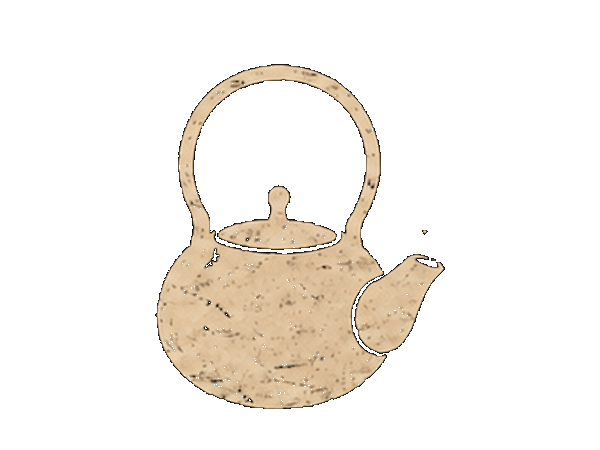
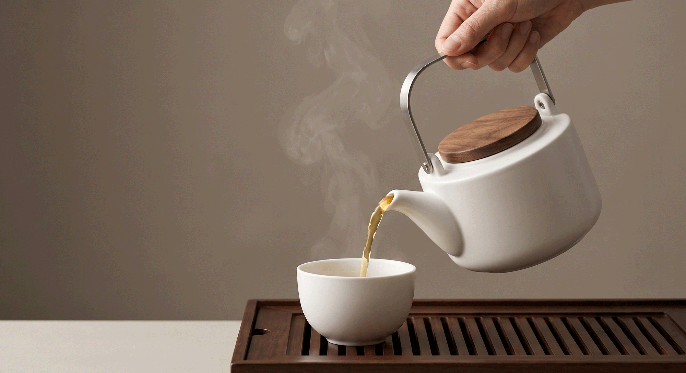

STEP 01.
찻잔 예열하기
따뜻한 물로 찻잔과 다관을 데워요.

Daily tea
바쁜 하루 속,
잠시 차 한 잔의 쉼
자연의 흐름에 맞추어 고요하게, 여유롭게
세상의 기준을 벗어난 가장 당신다운 삶의 여정으로 모든 순간
바쁘게 흘러가는 하루 속에서, 우리는 종종 멈추는 법을 잊습니다.
일상에차는 그 짧은 멈춤에서 시작되었습니다 —
잔에 담긴 온기, 천천히 우러나는 향, 그리고 온전히 나를 위한 몇 분.
우리는 차가 단순한 음료가 아니라, 하루를 다정하게 매듭짓는
작은 의식이라 믿습니다. 오늘도 바쁨 속 어딘가에,
당신을 위한 차 한 잔의 쉼이 있기를 바랍니다.
일상에차 드림
